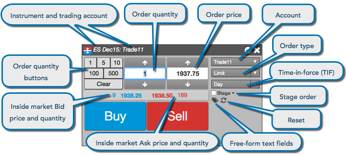

An Order Ticket allows you to submit orders for contracts in a Market Grid, including the order price and quantity, trading account, order type, and time-in-force.

You can open an Order Ticket from the following widgets:
You can also open an Order Ticket for an instrument using the Search functionality.
Note: If you open a non-tradeable contract, such as a spot contract or cash index, the Order Ticket displays the Price and Quantity fields with a maroon background and disables trading for the contract.